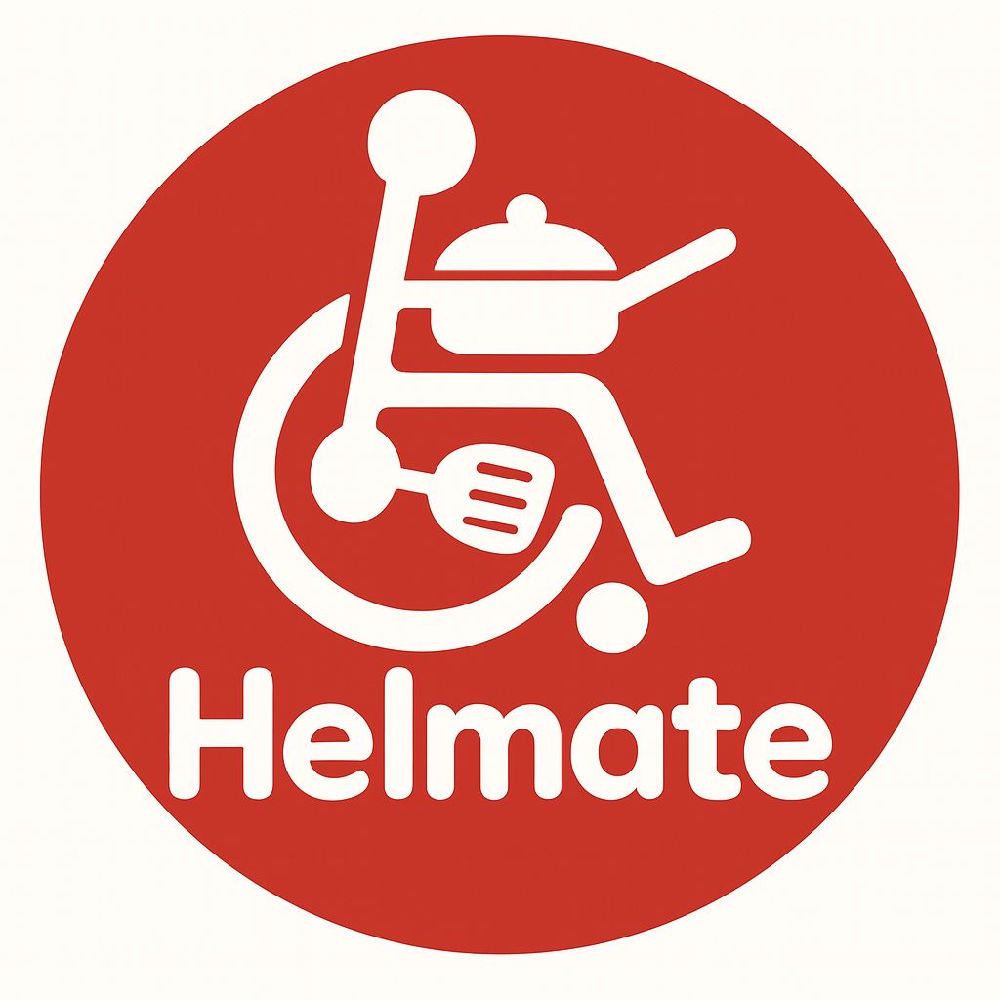

月間スケジュール
西暦 年 月
日付から探す
空白部分を２秒押すと文字を書き込めます。その状態でさらに２秒押すと画像が貼り付けられます。
データは未来１年分過去１０年分が記憶され表示できます。
データは未来１年分過去１０年分が記憶され表示できます。
1日
2日
3日
4日
5日
6日
7日
8日
9日
10日
11日
12日
13日
14日
15日
16日
17日
18日
19日
20日
21日
22日
23日
24日
25日
26日
27日
28日
29日
30日
31日
空白部分を２秒押すと文字を書き込めます。その状態でさらに２秒押すと画像が貼り付けられます。
データは未来１年分過去１０年分が記憶され表示できます。
